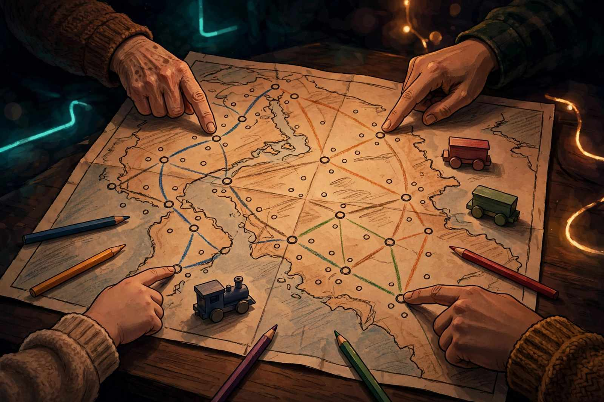

Train and route games for family night: five ways to connect a map

The short answer, before the details: a six year old starts with Ticket to Ride: First Journey, an eight year old can handle everything else in this guide, and the real choice after that is not theme or box art. It is who owns the track. One game gives each player private routes that rivals can block. One builds a single shared network that anyone may use. One hands every player a private paper map that nobody can touch. That single difference decides how much conflict a mixed age table gets, and how the evening feels.
Ages 6 to 7: First Journey, and nothing heavier yet
Ticket to Ride: First Journey is the one box in this guide built for this band. Days of Wonder lists it for 2 to 4 players, ages 6 and up, at 15 to 30 minutes a game. The USA edition holds 80 plastic trains, 72 train cards, 32 ticket cards, and four bonus ticket cards. Players collect colored train cards, spend matching sets to claim routes between cities, and chase the cities printed on their tickets. The first player to complete six tickets claims the Golden Ticket card and wins, which replaces the points scoring of the longer game entirely.
That finish line is the design decision that matters at this age. A six year old can see the goal, count the tickets finished, and know how far everyone else is from the end, all without adding a score. There are no points to total at the end and no bonus arithmetic to explain. When a child at this band asks for the grown up train game, this is the box that answers, and the honest move is to let it be enough until the tickets start feeling easy.
Ages 8 and up, short nights: taxis and pencils
Ticket to Ride: New York shrinks the family formula into a coffee break. Days of Wonder announced it as a stand alone game for 2 to 4 players, ages 8 and up, playing in 10 to 15 minutes. The trains become taxis, 60 plastic taxis in the box, along with 44 Transportation cards and 18 Destination Ticket cards. Players race around 1960s New York City, visiting landmarks and completing destination tickets on a small Manhattan map. The publisher's announcement put the retail price at $20 when the game launched in 2018, a figure worth treating as history rather than a current shelf price.
Next Station: London, from Blue Orange Games and designer Matthew Dunstan, removes the shared board altogether. It plays 1 to 4 players, ages 8 and up, in about 25 minutes, and GeekDad listed it at $17.99 when it was checked for this guide's research on November 17, 2026. The box holds 200 map sheets, 20 cards, and four colored pencils. A station card is flipped, and every player draws a line segment on their own London map sheet at the same time. Four rounds build four Underground lines, one in each pencil colour, and a line scores the number of districts it passes through multiplied by the most stations it touches in any one district, plus two points each time it crosses the River Thames.
Short nights suit both boxes for different reasons. New York ends before attention does. Next Station has no turns to wait through, because everyone draws on every flip, so a slow decider delays nobody.
Ages 8 and up, full nights: the classic and the shared track
Ticket to Ride, the original Days of Wonder game, remains the full size version: 2 to 5 players, ages 8 and up, 30 to 60 minutes. Players collect matching train cards and claim routes across a map of North America. Claimed routes score by length, from one point for a single segment up to 15 points for a route of six. Destination tickets stay secret until the game ends, completed tickets add their printed points, uncompleted ones subtract them, and the player holding the longest continuous path earns a bonus of 10 points. At setup, each player is dealt three destination tickets and must keep at least two.
TransAmerica, published by Rio Grande Games and designed by Franz-Benno Delonge, takes the opposite approach to the same map problem. It plays 2 to 6 players, ages 8 and up, in about 30 minutes, with a setup time of two minutes. Each player holds five city cards, one from each of five regions of the United States, and races to connect all five cities with track laid on one shared board. Track placed by one player stays on the board for everyone, so a rival's building can quietly finish a route another player needed. It is also the only game in this guide that seats six, which makes it the default answer for a full kitchen table.
| Game | Players | Ages | Time | Track belongs to |
|---|---|---|---|---|
| Ticket to Ride: First Journey | 2 to 4 | 6+ | 15 to 30 min | Each player, on short routes |
| Ticket to Ride: New York | 2 to 4 | 8+ | 10 to 15 min | Each player, in taxis |
| Next Station: London | 1 to 4 | 8+ | About 25 min | Nobody, each map is private paper |
| Ticket to Ride | 2 to 5 | 8+ | 30 to 60 min | Each player, and routes can be blocked |
| TransAmerica | 2 to 6 | 8+ | About 30 min | Everyone, one shared network |
Who owns the track decides the arguments
Private routes create one specific flashpoint: the moment a player claims the exact route a child was saving cards for. In the Ticket to Ride games that moment is legal, common, and worth a warning before the first game with a sensitive player. First Journey softens it with short routes and a race to six tickets. The full game sharpens it, because secret destination tickets mean a blocked route can quietly turn a scoring ticket into a penalty at the end.
The shared network removes that flashpoint and adds a subtler one. In TransAmerica, helping the table is unavoidable, because every piece of track laid is public. The skill sits in timing, building the stretch that finishes your own five cities before it finishes somebody else's. Nobody can be blocked, so nobody can claim they were. The private paper map removes direct conflict entirely: in Next Station: London, no player can affect another player's sheet at all, and the competition is purely a score comparison at the end of four rounds. For a table where one child takes blocking personally, that is not a lesser game. It is the correctly chosen one.
Pick by youngest player, then by patience
Work through three questions in order. First, the youngest player: under eight means First Journey, full stop. Second, the headcount: five players points to the original Ticket to Ride, and six points to TransAmerica, because nothing else here seats them. Third, the mood the table can carry tonight. Choose a private map when the evening needs calm, a shared network when the group enjoys a race without a villain, and private routes when everyone at the table can lose a route to a sibling and still ask for a rematch. The trains are the easy part. Matching the conflict to the family is the actual decision, and it is the one these five boxes, between them, cover completely.
— Grace Okafor, Family & Parenting Writer